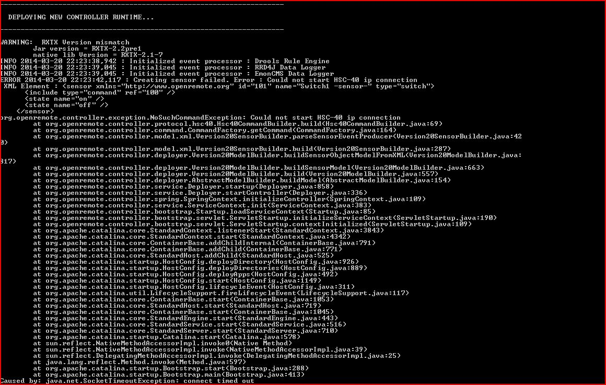
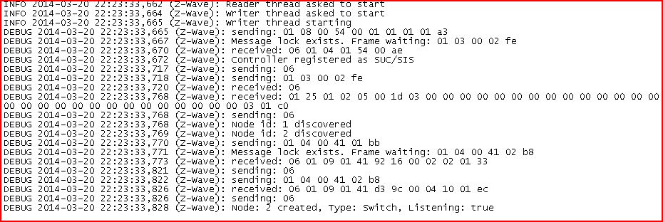
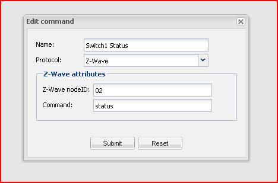
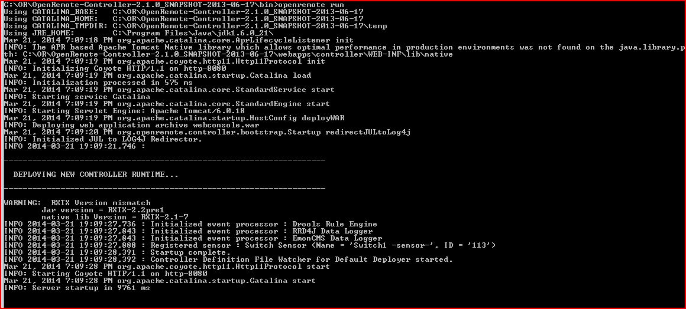
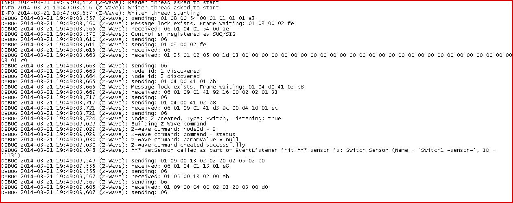

Hi.
I'm getting this from the controller

I have a Z-stick and a switch. and the zwave debug log show this

I checked several times and found nothing.
This is my first time setting a zwave device so if someone can point me in the right direction will be great for me.
Thanks in advance.
{kind=link}
{kind=link}
{kind=link}
{kind=link}
{kind=link}
{kind=link}
{kind=link}
|
Can you give a screendump of the status command to your Z-Wave device? |
|
I did notice an image for the command. Shouldn't that be device 2 instead of 02 ? |
|
I fixed that  now the light turn on and off but don't update the status if i prees the wall switch. |
|
Sorry, I have to leave this to others. I do not use native Z-Wave anymore, so I can't compare your logs with mine. From what I did read in the log it seems that your devices (controller and switch) are correctly discovered. |
|
Thanks Pieter for triying. I guess you control you ligths with a hsc-40. If so where i can buy one of those. actually the problem is when i press the wall swith the status of the light in the user interface does not change. I left the actual screenshots of the controller and the zwave-debug.log   fingers crossed! |
|
This topic has already been discussed. See Z-Wave sensor status not updated when switched externally. |
No I am not using hsc-40 but RaZberry. Razberry is in a bit of turmoil at the moment. If you have a pressing need to install a diversity of Z-Wave devices in combination with OpenRemote, I think the micasaverde vera is the best choice at the moment. They do have a much more active forum than openremote or razberry. |